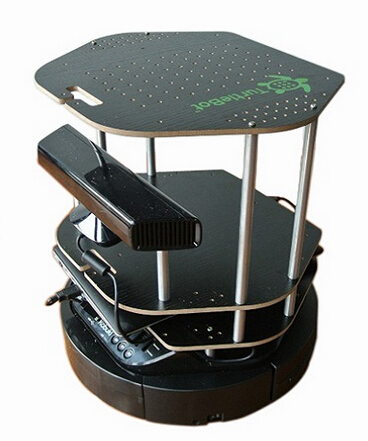

 In contemporary society, thermal management systems have managed to provide increased comfort to people in a variety of environments. These thermal systems are exceedingly simple feedback systems that rely on ambient temperature at a given point in a room. Because these systems do not demonstrate the full scope of the thermal state at any given point in a room, there is potential for improvement. The goal of team Beta-Max is to automate a measurement-taking device to provide thermal data in compliance with the ASHRAE Standard 55. When the technology of thermostats progresses to the point where the data is useful, a more efficient method of administering thermal comfort will become available.
In future households, utilizing this technology will provide people with the means to maintaining their personal set comfort level. Furthermore, it has profound effects on the productivity of office workers. Workers that are more comfortable make fewer errors and are more productive.
The goal of this project is to measure and communicate sensor data from a moving robot to better gauge how comfortable a room is and what changes need to be made to increase comfortability. The use of a moving robot, wireless data communication, and a graphical user interface to analyze and visualize data will be important in the development of this project.
The Turtlebot is an open source robotics platform for product development and education that uses the Robot Operating System (ROS). The Turtlebot has a stereoscopic camera and is controllable with any paired laptop running a compatible version of linux.
Thermal comfort comes from several measurements and environmental factors. With the sensor array, we will focus on airspeed in two directions, ambient temperature, radiant temperature, and humidity. Using the collected data, temperature change over time and space will be calculated. Other environmental factors include light and sound measurements which will also be recorded.
The system will be designed to handle multiple inputs including ambient temperature sensors, radiant temperature sensors, light intensity measurements, sounds measurements, air speed measurements in both x and z directions. After gathering the data, the LabJack (Data Acquisition Tool) will send the data to a computer, which will have an interface that the user can use in order to interpret the data. In order to move freely around the room, the robot will have another input that uses a camera to easily maneuver around the room without running into objects. The interface will provide a temperature contour map of the room that is being examined by the Comfort Sensing Robot. This map will layout the most and least comfortable areas around the room.
{% endblock %}